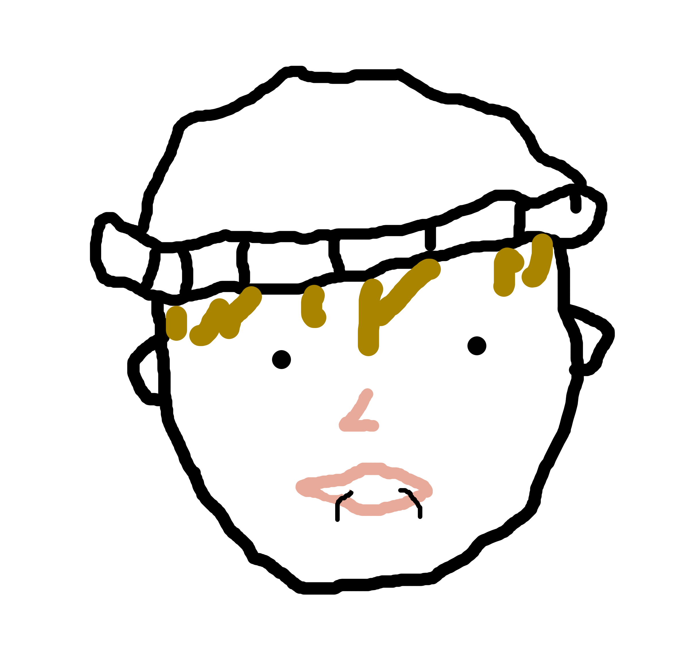

Ein sehr guter Bürgermeisterkandidat
"Ich bin gekommen, um euch von euren Sünden zu erlösen"

Ich wurde vor vielen Jahren hier geboren. Gemeinsam mit meiner
Familie (aber hauptsächlich ich alleine) habe ich Laa zu dem
gemacht, was es heute ist. Jetzt brauche ich Ihre Unterstützung,
damit wir gemeinsam für Laa noch mehr erreichen können.
"laa ist toll" - subi
Ich finde subi sehr nett und er wäre ein guter Bürgermeister.
Ich will Geld und subi will es mir geben, daher wähle ich ihn.
Boah subi ist voll gechillt, ich liebe den Typen. Manchmal
teilt er seine Kräuter mit mir, wenn ich beim Kochen bin, das
ist voll korrekt von ihm.
Bildquellen:
Rathaus, Bürgerspital: Stadtgemeinde Laa an der Thaya
Person 1: Marcos Paulo Prado, unsplash.com
Person 2: Noah Buscher, unsplash.com
Person 3: Steven Aguilar, unsplash.com
Subi: Reknits